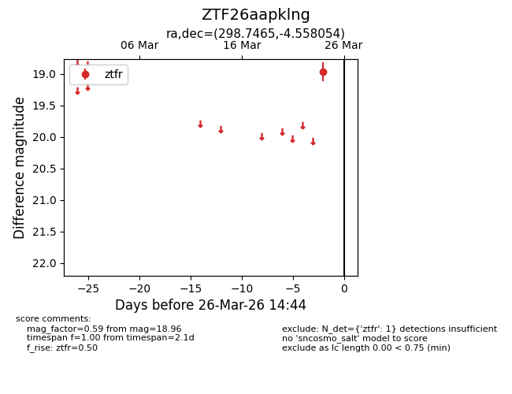
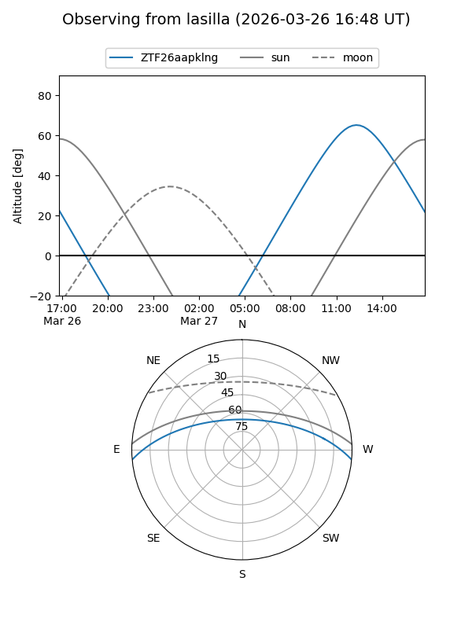
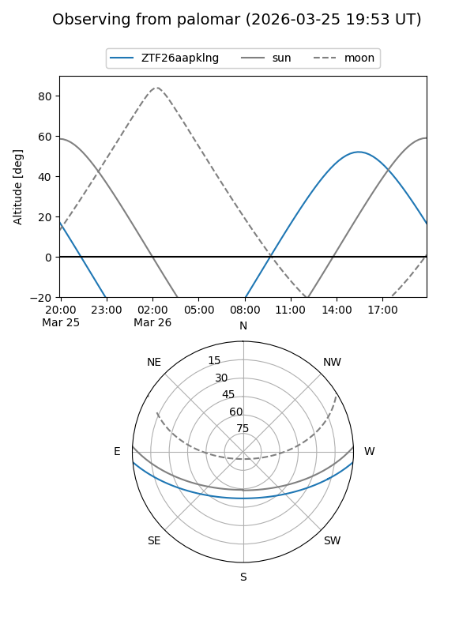

ZTF26aapklng
Target ZTF26aapklng at 2026-03-26 14:46
Aliases and brokers:
FINK: link
Lasair: link
ALeRCE: link
alt names
ZTF26aapklng (ztf,fink_ztf)
Coordinates:
equatorial (ra, dec) = 298.7465,-4.55805
equatorial (HMS+DMS) = 19:54:59.15,-04:33:29.00
galactic (l, b) = (36.1377,-16.20602)
Flags:
Photometry:
last ztfr=18.96
1 ztfr detections
Lightcurve

Visibility


Additional plots